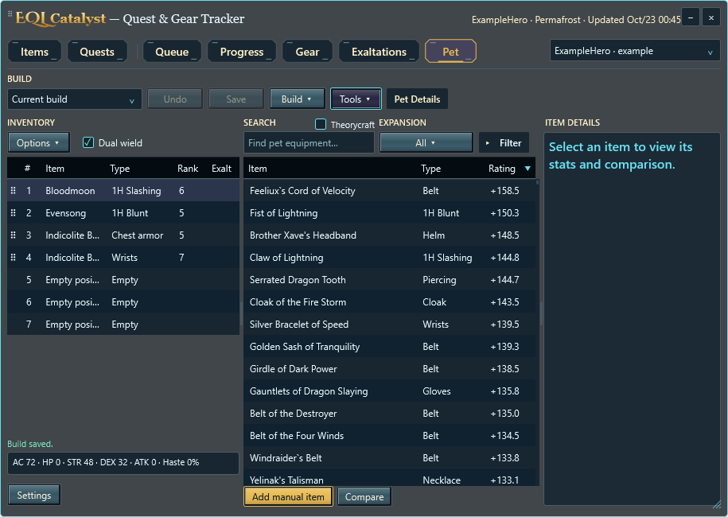
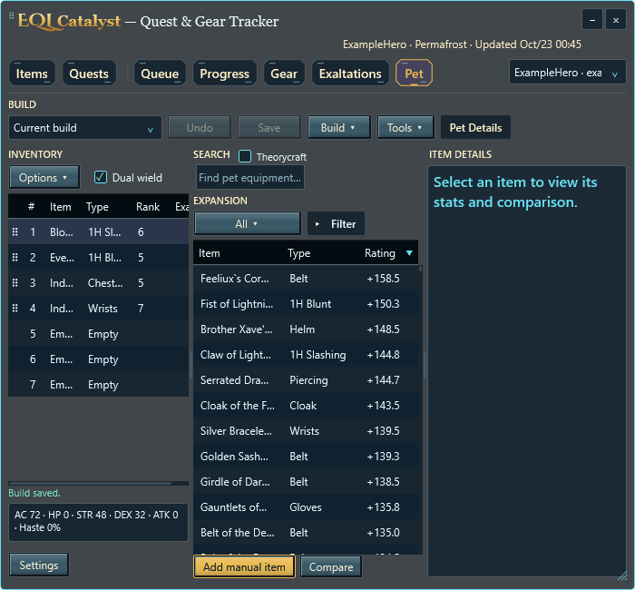
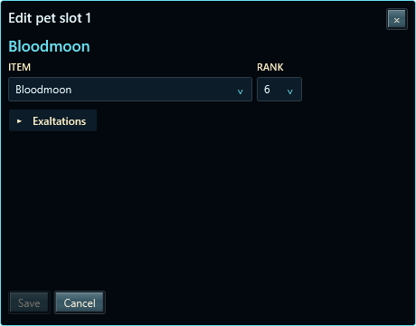
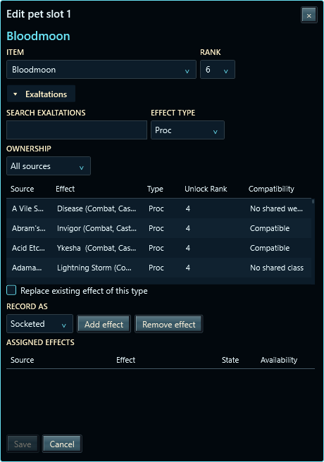
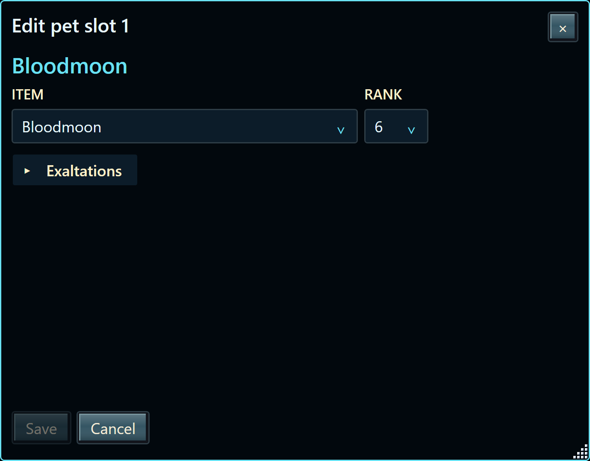
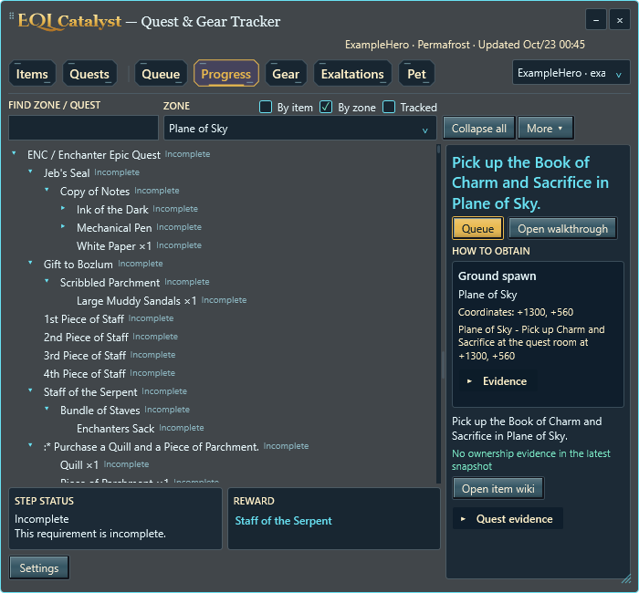

Edits stay in a draft until Save. Undo restores the complete last-saved build. Tools contains Compare pets, Weights and locally enabled Pet data; Pet Details remains a separate action.


Item and editable Rank controls are compact. Save stays disabled until values change and validate. Exaltations grow and shrink the editor vertically. Replacement and swaps retain Exaltations at their numbered positions.


This is an actual HWND capture at the current 300% scale, including its border and resize grip. The former white caption strip is gone.

Tracked unchecked means all quests. By item and By zone are independent modes with their own filters and tree state. Zone starts at your current documented location when available.

51 synthetic UI checks pass in both local and public configurations. 231 Pet and 42 Progress regressions pass. Wrap-threshold checks use keyboard focus and UI Automation; native pointer attempts affected by desktop input interference are documented separately. Broad theme/DPI matrices are deferred.
All images use synthetic data. Published Beta 1.4, installers and Store submission are unchanged.